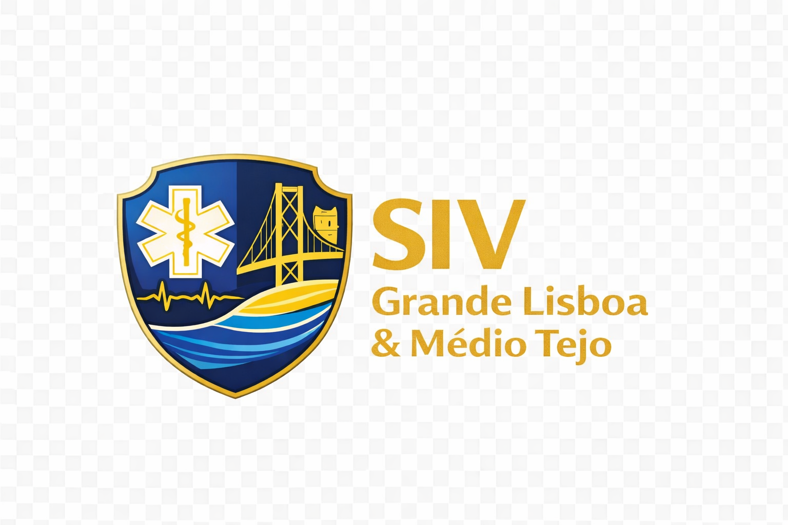

Consulta rápida com mais protocolos, cálculo de doses quando aplicável e maior contexto clínico. A homepage foi reorganizada por risco clínico, enquadramento na abordagem ABCDE e complexidade operacional. PCR e disritmias mantêm-se no primeiro plano, seguidas dos restantes protocolos críticos do doente grave. O peso prevalece; sem peso, a idade ajuda a enquadrar algumas doses pediátricas.
Resumo operacional